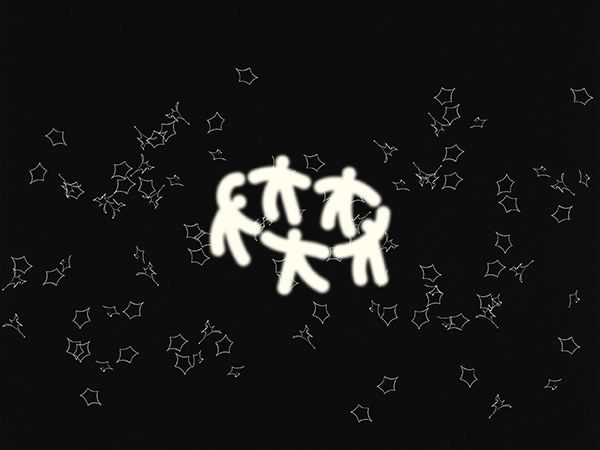

展示によせて→
昨日より暑く感じる日に、大学のゼミの先生の展示に行った。音楽とポスターの展示。軽やかというより質量は最小限になっていて、空気を震わせる振動と、意味がいくつも折り込まれている平面のイメージだけがあった。
次の日に（もちろんこの日も昨日より暑く感じた。）、私たちで展示をしませんかと連絡をとった。
shinin d(^_^o)（シャイニン グ）はとにかく光っている展示を目指して名付けた。
何億光年と離れている場所から一直線に光っているあの星は、大きなエネルギーを持っているのにどこか儚い。巨大な空間の中でポツンと孤独。だけど光は確かにここまで届いている。そんな感じの展示です。
作家より↓
オオタ ソラ→
キューブリックの『シャイニング』は、冒頭の車が山道を進むシーンで何度か見るのをやめた。低い管楽器の音が私を不安にさせた。展示タイトルを決めて、この文章を書くときに全編を観て、シャイニングが子供や料理人の持つ超能力を指していることを知って驚いた。
最近はモニターを使って映す映像に興味がある。画面には小さな粒状の光が整列していて、ひとつひとつが光ったり光らなかったり、光が強くなったり弱くなったりすることで無数の像が現れては消える。高速に光が入れ替わることで無数の像同士を結ぶ。普段目にする映像は私たちに没入と狂気をもたらして惑わせる超能力のようだ。けれど映像そのものを非現実な超能力にはしたくない。これはただの光なのだ。
新→
毎日が昨日と特に変わらない。憧れのような生活も、ドラマみたいな恋もない。夜更かしするだけでドキドキしていたあの頃の気持ちも今はもうなくて、ただ漠然とした不安だけが緩やかにある。原宿の交差点で、昔好きだった曲を聴く。今はまた違う風に聴こえるのかななんて思っていたら、ほこりをかぶっていた記憶がまたあの頃と同じように踊り始めた。リズムに乗って線を引き、私のまわりに配置する。そうしてできたかけらは、ただ微熱を帯びたそのかけらは、こころがじんわり溶けるくらい少しだけきらきらと光っていることを、私だけが知っている。
 instagram↗